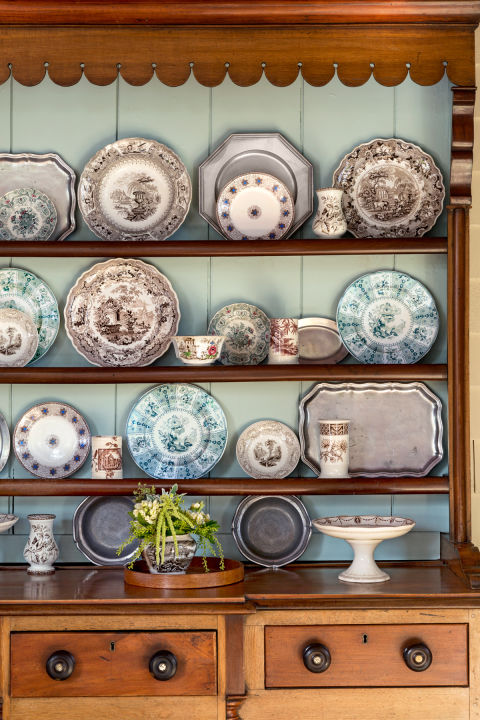
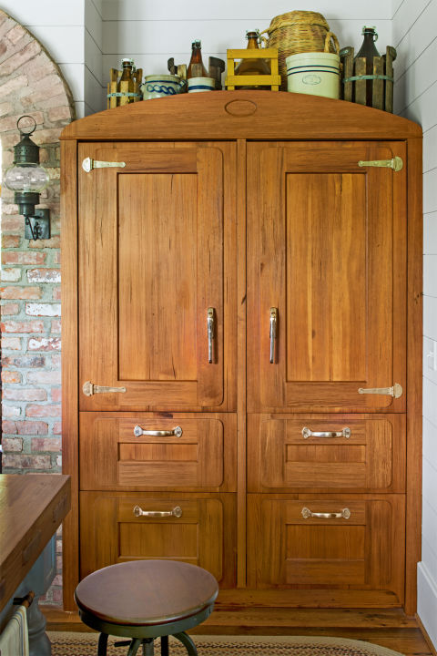
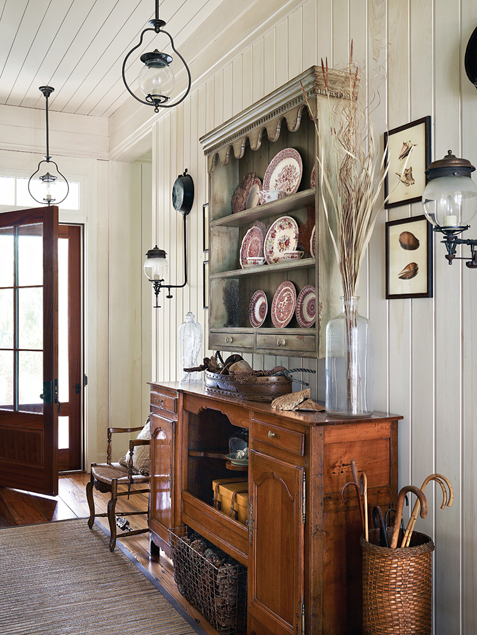

.png)
.PNG)
.PNG)
.PNG)
.PNG)
.PNG)
.JPG)
.JPG)
.PNG)
.PNG)



source  (photo by Helen Norman)
Okay, today I will explain to you why I wanted you to see the photographs of the gorgeous Daufuskie Island house in Friday’s post. Â You see, I saw the photo above somewhere online months ago. Â It had the caption, “Kay Stanley’s new home in South Carolina.” Â I remembered seeing a photo of a cabinet with transferware in the Daufuskie house, and I thought, Surely they didn’t sell that fabulous home?? Â
Then I saw this photo with the same caption.
source photo by Helen Norman
And I thought, Oh yes. Â They must have sold it and moved their refrigerator to the new house.
Wrong.
The cabinet with the transferware I was thinking of was this one:

source
Similar but not exactly it.
And that refrigerator made to look like a vintage icebox?
It was this one:
 source
source
Again, similar but not exactly it.
The cabinet and the refrigerator are indeed in a new Kay Stanley home, but no, she and her husband, Curt Seymour did not sell the nostalgic home on Daufuskie Island. Â Instead, they built another home in South Carolina – a new one on Lake Keowee.
This house:
source photo by Helen Norman
So they now have a beach house and a lake house. 🙂
This house, featured in the summer 2013 issue of at home magazine and the November, 2015 issue of Country Living magazine, also has nostalgic roots. Â The couple modeled the home after Kay’s grandparents’ old Minnesota log cabin where she spent so many summers growing up.
The lake house has a decidedly more rustic feel than the house on Daufuskie. Â In fact, Kay stated that this house is “Curt’s house” as consolation for having to work with her on the Spartina line while he is in retirement.
So the man cave is a rather big deal in the lake house. 🙂
I thought the kitchen was also a big deal with a beautiful huge island.
source Helen Norman photograph
It has the same feel to me as the Daufuskie Island kitchen, and you can see the refrigerator in this photo.
Don’t you love those wicker chairs in the dining room?
source photo by Helen Norman
Kay purchased the wooden canoe years ago and kept it stored in their basement until she had a home in which to use it.
source photo by Helen Norman
Of course I like the master bedroom with its checked bed curtains. 🙂
This room seems less rustic to me and has more of the feel of the rooms in the Daufuskie house.
source Helen Norman photograph
The master bathroom is beautiful with its cabinet and double sinks.
(Especially love the light fixtures!)
source photograph by Helen Norman
And the final room you have to see…the fabulous porch with a fireplace.
Obviously the photo above is with the room unstyled from the the 2013 article. Â Here it is in last fall’s magazine feature. Â Isn’t it amazing what accessories and plants can do for a space?
source photograph by Helen Norman
Although this house is beyond wonderful, I think I like the Daufuskie one better…or at least better right now.  In October or November, when I am in love with rustic homes, I would probably tell you I like this one better.  It’s a seasonal thing. 🙂 LOL
Before I get off the computer today, let me do one last shout out reminder about the Valentine giveaway I have going on here: Â the $50 Spartina 449 gift card, the Life Beautiful magazine, and the Valentine’s quote cards.
Just leave a comment on any (or all for more chances!) post that publishes between 2/4/16 and when the entry period closes at 11:59 p.m. EST on Monday 2/8/16 to have an entry in the random drawing. (Only one comment per post please.) The comment must be on the post itself at www.talkofthehouse.com and not a reply to an email delivered post.  I’ll have a random drawing on 2/9/16 and announce the winner in the first post after that date.
I hope you have enjoyed seeing the other Kay Stanley house.  There are more photos of it on both the Country Living website and the builder’s website, The Carver Group.  Click over and enjoy them! (And good luck with your entry for the giveaway. 🙂 )
Until next time…


.PNG)
This house is gorgeous but I do think I like the other one a smidge better. DiAnne who commented above is being very modest as she has a beautiful house on Lake Keowee that is filled with pretty antiques and cool art! She is also very, very sweet to invite her friends to enjoy it also!
I went in a house yesterday that I wish I had pictures to share. I took my granddaughter to a birthday party of a cute little girl in her preschool class who has the cutest mom. Well all last summer I strolled my grandson by the little girl’s grandparents so cool 1930 huge rock house with a cute guest house. Last summer the guest house was added onto and redesigned on the outside and a wraparound porch was added. I thought that my granddaughter’s preschool friend and her family had moved into the cool guest house. Come to find out the grandparents moved into the guest house and the young family bought the super cool huge rock house. Well you know me, I just had to walk all through the house and every room was the prettier than the room before. I told the cute mom that I was shocked the house had never been in a magazine. I just love it when a normal ole’ day turns into something fun like touring a house you have long admired.
Happy Thursday Kelly!
I love this house. Lots of inspiration.
Kelly,
I love this lake house! I have spent many days on Lake Keowee. Love that section of. Upstate SC.
DiAnne
Since my husband and I used to live in Charleston, but now live in middle GA, we love everything South Carolina and Lake Keowee is beyond beautiful! Thanks for showing here lovely homes. Have a fun week and Happy Valentine’s Day a bit early!
Phenomenal house, and that kitchen island is something else. Thanks for sharing with all your fans, Kelly!
I love a lot about this house too!!! The light fixtures, the bead board ceilings and the views!!!! But most of all I’d just love to cook in a kitchen like that just one time!!! Now that would be an awesome give away!! Lol!! Lots of blowing cold snow here in KY today so a slow day. Enjoy your day.
Beautiful!
You’re killing me with these houses!! I adore my house so much….until I see these beyond amazing homes you are posting! I am going to have to stop looking…..:)
How I love it when you take us on tour! This is so beautiful. I love the rustic perfection! We bought a little camp on a small lake in Maine in December and it is SOooo rustic…so this is quite inspiring!!! We have so many plans for our little place, it will be fun to pick up tricks from your inspiring articles to use in our place!
Thanks for sharing!
Hi Kelly! Thanks for finding and sharing these amazing houses! I was thinking, what you actually went on to write! ( great minds!!) ” this is just beyond beautiful”
They are both such amazing houses, but sitting here this morning with my coffee I’m ready to pack up and move across the ocean! 🙂 All aspects of the Lake House are just perfect to me. I honestly can’t choose which room I like best. The room with the sofas and the arch to the kitchen reminds me of an old, stone built house in the Cotswolds that has become a shop and design display for an Interior Design Company. Whenever I visit there I want to move in too! I’m sure I ll be reading this post many times and I’m planning on showing hubby and daughter .. Not sure the boys will be interested but I can try!
As always great to have a post from you to read and re read! Hope you’re having a good week and your father in laws health has improved. Take care!
Rosemary.
Oh my that brick and those beams are fabulous! But I saw that canoe on the wall and did a double take! Is your husband going to build one for you to hang on a wall? : ) That little red milk an on the hearth could come home with me. Both of the homes are just beautiful.
I’m with you. I like the Daufuskie home better. The glass windows are beautiful and offer a grand view. On another note, I was in my local Hallmark store and was able to buy the cute sled you found for your winter decor. Thank you for the idea!
I love the kitchen, bath, and porch. I have to say I am partial to the Dufuskie home though. I have really enjoyed these last two posts. Thanks, Kelly.
I do love rustic homes, so this is beautiful to me! Wow, I would love to spend a weekend in this home. Thank you for sharing such a unique lake house.
Love your style!
This is a beautiful home – I especially love the porch with the fireplace and the beautiful master bath! Thank you again for your wonderful giveaway – Love your posts!
I can’t imagine owning two houses this spectacular!
I am partial to the Daufuskie house but this one is beautiful as well. I do love Lake Keowee. (DiAnne is blessed with a fabulous lakehouse there that she so graciously shares with her friends.) I like the kitchen in Kay’s lakehouse and the exterior. Thanks for sharing it.
You always inspire by sharing your own home as well as lovely homes you’ve discovered through your searches. We have a modest mountain cabin, so I’m partial to the more rustic lake house. The Daufuskie house is lovely too!
Since I live in a cabin in the mountains, I’m partial to rustic style. Love this house! The kitchen island is fabulous (well, the whole kitchen is), but it is probably longer than my entire kitchen! I’m not crazy about the interior brick and would prefer stone in a mountain/lake house. The thing I love most about the Daufuskie house is that it is built to look like an old coastal/tidewater house that has been added on to. The lake house does adhere to the mountain vernacular with a nod to Shingle style, but doesn’t appear as ‘old’ on the interior. Nevertheless, I’m being picky, because I think it is pretty fabulous! I also love the landscaping and the steps down to the lake.
I love looking at beautiful homes!
Thank you for the giveaway.
What a statement that canoe makes! Beautiful.
Thank you for the giveaway.
Beautiful- what a gorgeous staircase. I’d love to spend some time there.
Both homes are wonderful but I think I like the island house the best– but it may be a bit difficult to reach if only by boat. As if I HAD to worry about that!:) Then during storms — I don’t even want to think about that!! Maybe I need to be inland on the lake! Now off I go to the beach condo for the last visit and then back to my own cottage by the lake– WAY inland!! 🙂 Cold cold down here!Brr–
Wow! They are both wonderful homes. I agree the more rustic home speaks “fall”.
On a snowy Midwestern day, this is like a shot of sunshine — thanks!
Love looking at beautiful homes.
Beautiful photos – I love that canoe! It really gives you a sense of exactly how grand that staircase is!
I feel the same way about rustic, and spring light. Of course that is where the concept of “cottage” came from. The English put the word on the map….and now you know the “rest of the story”.
The Stanley’s have done it again! I think the Daufuskie home is my favorite, but this one is gorgeous as well!
LOVE all the houses you feature!!
Kelly,
I have to agree with you that I like the other Kay house better but if you could have a beach house and a lake house then I love them both! They are both perfect for their location. I am more of a beach loving girl but due to geography we have a lake house. We usually rent a beach house every other year for our vacations. Thanks for sharing Kay’s lovely homes with us. I just adore her attention to details.
Dawn
Beautiful! I love the cabinet in the kitchen. I’m also a fan of transferware and love the wooden canoe going up the stairs. Great ideas. Thanks, always love your blog.
Beautiful – I would happily live in either one of these homes!
I think I like the lake house better if I had a choice! Love all of your post! Thanks for offering the great give away! 🙂
What a lovely home. Thank you for sharing this.
I love your blog. I just started reading it a couple of months ago!
I can’t wait to read it when it pops up! Thank you!
Thank you for sharing this second house. I always look forward to your posts, and interesting and lovely things that you share–both in your home, your travels, and others’ homes! (The give-a-ways are a special treat!)
Wow! I love both homes, but I’m sure I could be happy in either one! Ha! Thanks for sharing this one with us, also.
It’s funny how some homes seem so readily accessible, as though one could simply enter and feel ‘home’! Stunning!
This lake house is beautiful. I would love to enjoy a good book on that porch!
A truly beautiful home! Absolutely perfect!!
Love your blog. The lake house conjours many wonderful summer days growing up and spending them at the lake in the NW. The canoe on the wall is a unique twist to decorating. The man cave with windows to open and let the breeze blow through while playing pool. Summer come quickly!
Since we are currently building a lake home, I am very interested in her lake home, Of course mine is not nearly so grand:-) Love Spartina too, and ordered the purse after your last post ~ but I think I could find a thing or three if I won your generous giveaway Thanks always for doing all of this research. Love all your findings.
Both homes are so beautiful and charming. I think I like the lake house best,especially the porch,but both provide so much inspiration. Thank you.
I love the icebox look. I’m amazed how you make so many visual connections between photos stored years apart in the catalog in your head! Your “before” and “after” lloks at styled rooms make me feel a little better about our decidedly unstyled house! Great post!
Two of the most gorgeous homes I’ve seen. Thank you for sharing!!!
Love your decorating style. Thanks for all the great posts.
What a lovely home. Thank you for the post!
Beautiful homes! And I really like the vintage look refrigerator!
Another beautiful home! I do love the location! Thank you for sharing! Love the use of red in her home, as well!
LOVED this post, Kelly! I LOVE looking at beautiful homes with you!
I love these homes so much I had to scroll through the pictures a few times. The craftsmenship is so incredible and the details such as the arched window over the kitchen stovetop makes this room really special. The views are breathtaking!
Kelly….that was another beautiful home! Thanks for the tours! 😉
Kelly,
You know how much I love rustic homes, and I do like this one, but the Daufuskie house is my favorite of the two. Still, the lake house makes me want to take a vacation where you can relax, read and sit around the fire pit at dusk and enjoy the view!
xo,
Karen
Love this post. The details in this home are so personal and yet I feel as if I could sit in one of the chairs with a good book and a cup of tea and feel right at home.
Kelly, thanks for another great post! I love the touches of red she used in the house and definitely the checked curtains in the bedroom. Reminds me of…….?
Love both houses. I don’t think I could pick a favorite, but I’m leaning toward this one, because the house we are building will have a lake view, and I’m leaning toward a more cabin feel. But I have to say, while these houses are gorgeous, I have no idea why we need so much space. I thought the trend was away from oversized homes. While we are not huge on entertaining big groups of people, we find that our 1800+ sq. ft. house is adequate for entertaining 20-30 people. Being empty nesters, we have two dedicated guest rooms (and two sofas!) for stay over folks.
But I DO LOVE seeing how the other half live and decorate! Think I could wrangle an invite for an overnight in S. Carolina? 😉
Wow! Just wow! Thank you Kelly for sharing this.
Beautiful homes.. each unique.. and so welcoming!
Lake house, beach house, lake house, beach house, such a hard decision to make. I could be happy with either.
I’d love to know where she got the fridge. Looking at her transferware makes me want to start collecting. Lovely display!
All these gorgeous houses! So different but yet alike. Thanks for the post.
Again you have managed to bring me joy this morning. I love looking a beautiful homes. My husband would love a lake home so he could fish everyday! Thank you for a lovely tour.
I saw this beautiful house in Country Living. It’s gorgeous. I would love to my refrigerator look like an icebox.
All I can say is, ‘Wow!’.
I’m feeling like I could be a wee bit wishy washy like you when it comes to which of these magnificent homes I love, depending on the season of course. By the way, love your blog…
Thanks for entering me in the drawing! Love your blog!
That mater bath is my favorite! What a house.
I need to remember to use plants and color on my winter front and back porches to bring some life to them the rest of the winter!
Hi Kelly! I was delighted to discover the other reason of your previous post 🙂 Totally agree with you about the rustic feel, we maybe don’t want it for our everyday decor but I’d definitely love to spend autumn or winter holiday in such a fabulous house!I really love the bedroom! Full of light and so cozy 🙂
I wish you a wonderful day!
Claire
Absolutely beautiful! Perfect for Lake Keowee. The Daufuskie home is my favorite too. Thanks for sharing!
Wow…both homes are gorgeous. I guess my favorite would be which ever one I was staying in at the time. I mean, really, beach or lake? Win-win! 🙂 I love Kay Stanley’s style. Thanks for the introduction!
You find the most amazing homes to show in your blog! I am more traditional but this rustic house is gorgeous, especially that kitchen. And thanks for the giveaway, I love Spartina!
I like the island house the best I think. But then, I love the ocean!
Love today’s blog. Just a wonderful way to start my Monday. Spartina has such beautiful products and did not know about the Bluffton store, but am planning a summer trip to Hilton Head and will try to arrange the date to coincide with with the sale. Thanks so much for the offer.
Kelly, Thanks for sharing two beautiful homes.I love the third picture (entry) with the use of so many textures,very inviting! Thanks for the drawing.
Both homes are just fabulous…I would be hard pressed in deciding which house I wanted to spend time in.
The lake house is a bit too grand to be a cozy hideaway by a lake. Which for me is what it should be. I love the other house! It is perfection! Thanks for sharing them!
Oh,those refrigerators!! I love that look! Thank you for sharing.
Both houses are fabulously decorated. Just to wake up each day and look out a window to such beautiful views would be such a delight.
Love the pictures of the homes and introduction to the Spartina website! My daughter and I were impressed! The homes and the island are beautiful!
Those windows on the back of the house! The kitchen would be beautiful in any home. Love your posts.
Love Kay’s Mountain house. Beautiful. Your blog is so inspirational.
Love all the furniture they put in this home!
That fireplace? On that porch? That’s what I want! :o)
Kelly, I agree Love the lake house much better. This place would be great as a vacation space as you say, in the fall. But they are both amazing. Thanks for the pics and the giveaway 🙂
Love her style. I was smitten the minute I saw that back wall with all the windows. Not crazy about the brick hallway, and I’m not usually drawn to rustic, but this is beyond charming.
Wow! What great homes! I agree with you, the Daufuskie home is my favorite right now, but next fall the lake home might be my favorite.
Thanks for sharing!
I love, love, love your choice of homes to tour with your readers and I also love, love, love Spartina bags!!! Thank you for your blog. When I see your name in my emails, it brings a smile to my face!!
Wow! What a beautiful home….so many wonderful rooms and beautiful decor! I think my favorites would have to be the kitchen and the porch…. Thanks for sharing and for the giveaway opportunity! Blessings…
Love Spartina…have had one of the bags!
Toured Dafuskie via golf cart one summer…loved it!
Thanks for the giveaway!
And love, love your Blog!
That island! I love it! I also love the brick used throughout. Gorgeous!
Love, love, love Kay’s mountain house! You are such a great detective to find her second home. I’m having a hard time deciding at which house I would want to spend the most time. Thanks for another great blog.
Wonderful, simply wonderful! Everything is gorgeous!
Thank you for showcasing such wonderful rustic and classic homes! Wow – especially love the “old” refrigerators and the transferware cabinet with the robin’s egg blue color inside 🙂
Wow, another beautiful home! I agree with you, and prefer the beach house but this mountain retreat is pretty special.
Beautiful blog and I really enjoyed seeing the homes -your pictures are wonderful!
Wow! Fan of rustic style or not, those are some amazing houses you have shared. Thanks for the giveaway!
Kelly, such fun to see the beautiful homes you feature. Loving the brickwork and can you imagine whipping up cookies in that kitchen?
Thank you for a look into these beautiful homes! I also enjoy your blog with all of your decorating ideas! Thank you! Barbara in Parrish, FL